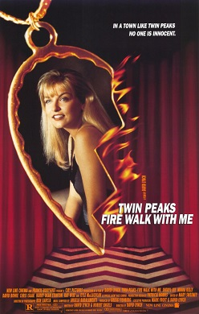

CineVerse
Welcome fellow cinephiles to my Cinema database and learn about your favorite movies, directors, actors and awards!
Directors
This section presents all directors in alphabetical order, including their biographical data, status, awards and the movies they directed.
Alfonso Cuarón Orozco[alive]
Lifespan: not specified
Nationality: Mexican
Biography:
A world-famous filmmaker with many prestigious awards. His work is known for being connected with the audience and his creativity and dedication to his projects is out of this world.
Awards (in total 1)
BAFTA Children's Awards – Best Feature Film (2004), for Harry Potter and the Prisoner of Azkaban
Movies directed (in total 1)
Harry Potter and the Prisoner of Azkaban (2004)
David Keith Lynch
[deceased]
Lifespan: not specified
Nationality: American
Biography:
He is considered one of the most significant figures in the history of cinema. He is a filmmaker, a visual artist, a musician and an actor, and his work is so distinctive that it has inspired the term “Lynchian”.
Awards (in total 2)
César Awards – Best Foreign Film (1982), for The Elephant Man
César Awards – Best Foreign Film (2002), for Mulholland Drive
Movies directed (in total 1)
Twin Peaks: Fire Walk with Me (1992)
James Francis Cameron
Lifespan: 16 August 1954 – present
Nationality: CanadianNew Zealander
Movies directed (in total 1)
Titanic (1997)
Stanley Kubrick[deceased]
Lifespan: 26 July 1928 – 1999
Nationality: American
Biography:
A great figure in filmmaking and photography of the post-war film industry. One the most influential filmmakers in the history of cinema. His films gained recognition for their innovative cinematography, their set design which were extensive, and dark humor.
Movies directed (in total 2)
A Clockwork Orange (1971)
Full Metal Jacket (1987)
Steven Allan Spielberg
Lifespan: 18 December 1946 – present
Nationality: American
Awards (in total 1)
AFI Life Achievement Award – Life Achievement Award (1995)
Movies directed (in total 1)
Indiana Jones and the Kingdom of the Crystal Skull (2008)
Movies
This section shows all movies in alphabetical order, including genres, production companies, cast, box office data, posters and external links.

A Clockwork Orange
Year: 1971 · Duration: 2h 16m
Director: Stanley Kubrick
Production: Polaris ProductionsHawk Films
Genres: CrimeDark ComedySci-Fi
Description:
A Clockwork Orange is a dystopian satire film following Alex DeLarge (Malcolm McDowell), a charismatic yet violent delinquent, who is subjected to an experimental form of state conditioning meant to reform criminals. The film explores themes of free will, morality, and the chilling consequences of a society that seeks to control human behavior.
Cast:
leadMalcolm McDowell as Alex DeLarge[alive] (born 13 June 1943) – English
leadPatrick Magee as Mr Alexander[deceased] (born 31 March 1922, died 1982) – Irish
Box office: Budget: $1.3 million · Revenue: $114 million
Links:
IMDb

Full Metal Jacket
Year: 1987 · Duration: 1h 56m
Director: Stanley Kubrick
Production: NatantHarrier Films
Genres: Dark ComedyDramaWar
Description:
Full Metal Jacket, is a stark portrayal of U.S. Marines from the brutality of boot camp under the tyrannical Gunnery Sergeant Hartman to the psychological chaos of the Vietnam War. The film examines dehumanization, the loss of innocence, and the duality of man within a relentless military machine.
Cast:
leadAdam Baldwin as Animal Mother[alive] (born 27 February 1962) – American
leadMatthew Modine as Private Joker[alive] (born 22 March 1959) – American
Box office: Budget: $16.5–30 million · Revenue: $120 million
Links:
IMDb
Harry Potter and the Prisoner of Azkaban
Year: 2004 · Duration: 2h 22m
Director: Alfonso Cuarón Orozco
Production: Warner Bros. PicturesHeyday Films1492 Pictures
Genres: Fantasy
Description:
Another year at Hogwarts, but this time it appears that Harry Potter has a dangerous prisoner escape hunting him. While Harry, Hermione and Ron try to find out the truth, they find themselves more shocked than they ever imagined.
Cast:
Alfred Lewis Enoch as Dean Thomas – British/Brazilian
Emma Charlotte Duerre Watson as Hermione Granger[alive] (born 15 April 1990)
leadDaniel Jacob Radcliffe as Harry Potter – English
supportingAlan Sidney Patrick Rickman as Severus Snape[deceased] (born 21 February 1946, died 2016) – English
Box office: Budget: $130 million
Links:
Trailer

Indiana Jones and the Kingdom of the Crystal Skull
Year: 2008 · Duration: 2h 2m
Director: Steven Allan Spielberg
Production: LucasfilmParamount Pictures
Genres: ActionAdventure
Cast:
Harrison Ford as Indiana Jones[alive] (born 13 July 1942)
Box office: · Revenue: $786.6 million
Links:
IMDb
Titanic
Year: 1997 · Duration: 3h 14m
Director: James Francis Cameron
Production: Lightstorm Entertainment20th Century FoxParamount Pictures
Genres: AdventureRomance
Description:
A woman from the aristocratic society encounters a free spirited man out of her society while being on the Titanic and they form a special bond against the rules. The ship’s tragical fate though makes them fight for their survival.
Cast:
Kate Elizabeth Winslet as Rose Dewitt Bukater[alive] (born 5 October 1975) – British
leadLeonardo Wilhelm DiCaprio as Jack Dawson[alive] (born 11 November 1974)
Box office: Budget: $200 million · Revenue: $2.264 billion
Links:

Twin Peaks: Fire Walk with Me
Year: 1992 · Duration: 2h 15m
Director: David Keith Lynch
Production: Ciby 2000
Genres: horror
Cast:
leadSheryl Lee as Laura Palmer – American
Links:
IMDb
Awards
This section lists all awards in alphabetical order, along with their title, organization, category, year and, when necessary, the related work.
AFI Life Achievement Award
Organization: American Film Institute
Category: Life Achievement Award · Year: 1995
BAFTA Children's Awards
Organization: British Academy of Film and Television Arts Children's Awards
Category: Best Feature Film · Year: 2004
Work: Harry Potter and the Prisoner of Azkaban
César Awards
Organization: Academy of Cinema Arts and Techniques
Category: Best Foreign Film · Year: 1982
Work: The Elephant Man
César Awards
Organization: Academy of Cinema Arts and Techniques
Category: Best Foreign Film · Year: 2002
Work: Mulholland Drive
D.W. Griffith Award
Organization: Directors Guild of America (DGA)
Category: Lifetime Achievement · Year: 1997